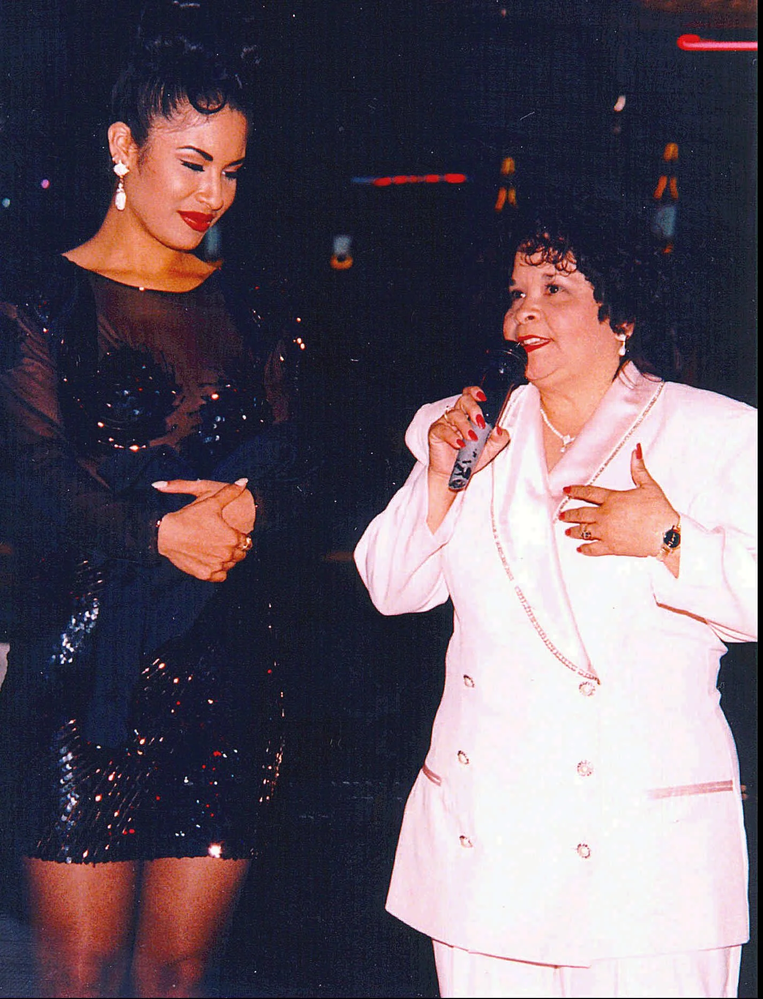

Selena Quintanilla

Cantante estadounidense. El 16 de abril de 1971 nació en la localidad tejana de Lake Jackson
Selena, una de las hijas de una familia feliz y estable de origen hispano establecida en la zona. No era más
que una niña cuando su padre, que había sido músico, se dio cuenta de la gran voz que poseía. A partir de
entonces centró todos sus esfuerzos en encaminar su vida hacia la música.

¿Cómo murió Selena Quintanilla?
La texana murió a manos de su socia, gerente de boutiques y presidenta de su club de fans, Yolanda Saldívar, quien le disparó en una habitación de hotel en el Days Inn de Corpus Christi, Texas. Los trágicos eventos no sólo incluyeron la muerte de la cantante, sino que iniciaron cuando Abraham Quintanilla, padre de Selena, descubrió anomalías en el dinero que se usaba para mantener las boutiques de ropa y el club de fans.